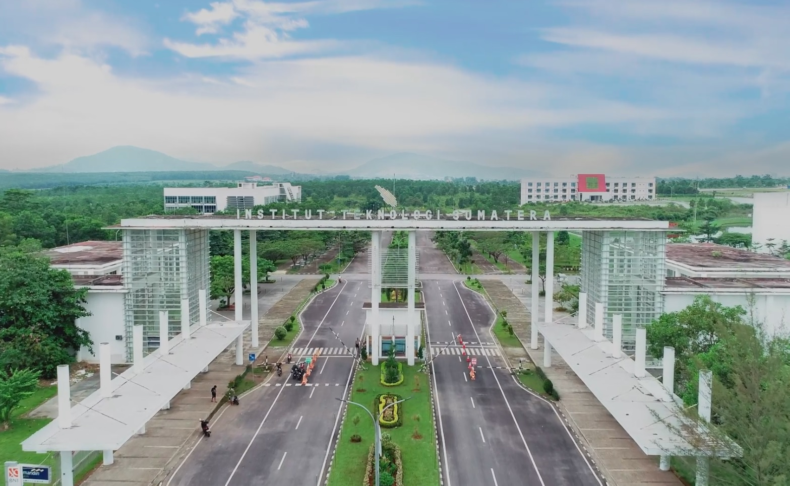

Institut Teknologi Sumatera
Institut Teknologi SumateraSelamat Datang di Website ITERA
Institut Teknologi Sumatera (ITERA). Sebuah perguruan tinggi negeri yang terdapat di Provinsi Lampung di Pulau Sumatera. Lokasinya berada di antara wilayah Kabupaten Lampung Selatan dengan Kota Bandar Lampung. ITERA didirikan berdasarkan Peraturan Presiden Nomor 124 Tahun 2014 tentang Pendirian Institut Teknologi Sumatera (Lembaran Negara Republik Indonesia Tahun 2014 Nomor 253) yang ditetapkan Presiden Republik Indonesia Prof. Dr. H. Susilo Bambang Yudhoyono, M.A. pada tanggal 6 Oktober 2014 dan diundangkan tanggal 9 Oktober 2014.